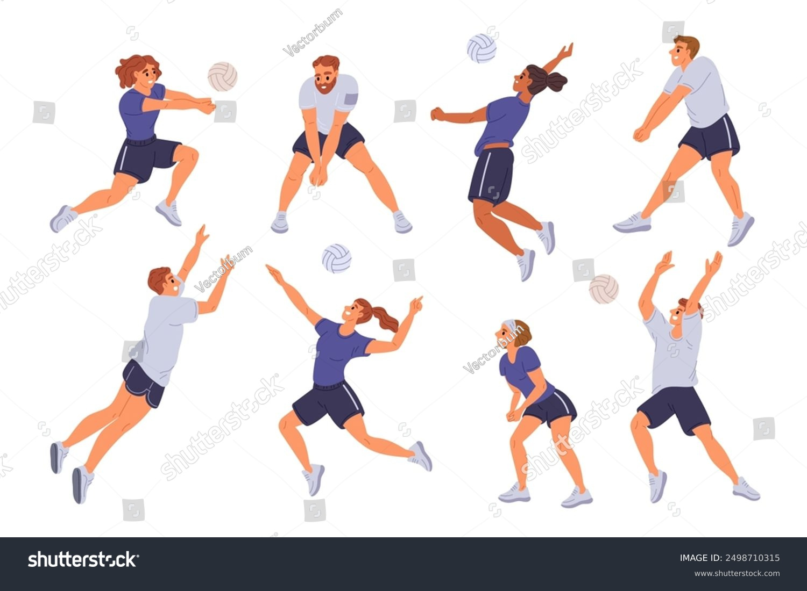

El voleibol se juega entre dos equipos de seis jugadores que buscan pasar el balón por encima de la red y hacerlo caer en el campo contrario. Este deporte requiere coordinación, rapidez y comunicación constante.

Entre los fundamentos técnicos más importantes se encuentran el saque, el bloqueo, el pase y el remate. Cada uno cumple una función esencial dentro de la dinámica del juego. 🔹 Saque Es la acción de poner el balón en juego desde detrás de la línea de fondo. Puede ejecutarse de distintas formas, como el saque por abajo, el saque por arriba o el saque en salto. Su objetivo es enviar la pelota al campo contrario con la mayor precisión y, en ocasiones, con potencia para dificultar la recepción del rival. 🔹 Bloqueo Es una acción defensiva realizada cerca de la red, en la que uno o varios jugadores saltan con los brazos extendidos para detener o desviar el remate del adversario. El bloqueo busca impedir que la pelota cruce a su campo o, en caso de que lo haga, reducir la fuerza del ataque contrario. 🔹 Pase (o recepción) Es el primer contacto con el balón tras el saque o el ataque del adversario. Generalmente se realiza con antebrazos (mancheta) o con dedos (pase de colocación). Su función es dirigir la pelota de manera controlada hacia el colocador, para organizar la siguiente jugada ofensiva. 🔹 Remate Es el ataque principal del equipo. Consiste en golpear el balón con fuerza y dirección hacia el campo contrario, normalmente después de un pase de colocación. Su finalidad es superar el bloqueo rival y hacer que la pelota toque el suelo en el terreno del oponente, buscando anotar un punto.
Además de las habilidades físicas, el voleibol fomenta valores como el compañerismo, el respeto y la disciplina (aunque la mayoría de personas no son así xD) lo que lo convierte en una actividad completa tanto a nivel deportivo como personal.